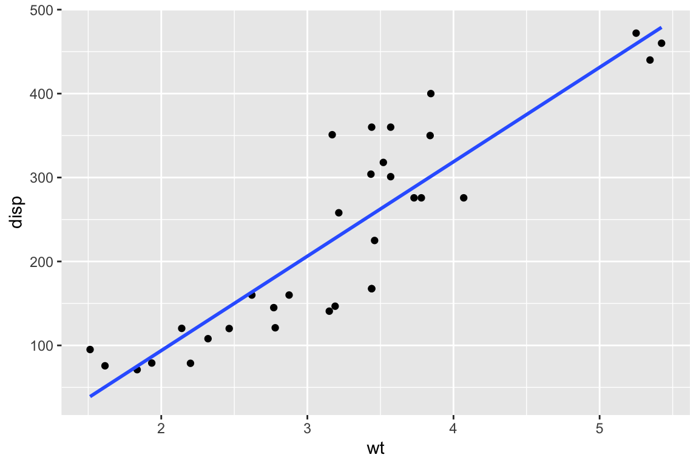

Plotting
This page was last updated on January 12, 2024.
Background
Data visualization is an integral component of scientific progress. The capacity to efficiently explore data and communicate complex and often nuanced findings are essential skills for any scientist.
“Most of us need to listen to the music to understand how beautiful it is. But often that’s how we present statistics: we just show the notes, we don’t play the music.” - Hans Rosling
This page provides basic guidance on how to plot data in
R. It is aimed at people who are new to R. It
is not aimed at providing guidance on data visualisation per
se, nor is it intended to be an exhaustive guidebook on plotting in
R.
The plot() function
This section describes some of the basics of plotting objects in
R.
Inherent flexibility
R comes with a built in plot function that has the
capacity to generate a seemingly endless variety of graphical outputs.
The beauty of plotting in R is the flexibility of the
graphing system. This flexibility, however, can also make it challenging
to develop a good working knowledge of the plot
function.
On of the most important things to know about the plot
function is that it can be applied to just about any R
object. The reason for this is that because many analytical workflows
typically have standard data visualisation steps (e.g., model fitting is
usually followed by visualising the residuals), the people who develop
R and R packages tend to develop bespoke
versions of the plot function. As a result, there are
special plotting methods for functions, data.frames, density objects,
fitted model objects, and so on. While this flexibility can make it
straightforward to generate the graphs that are usually expected from
certain inputs, it also means you need to always ensure that
plot is doing what you want it to do.
For example, if we know that X and Y are inversely related to one another, we might want to visualise this relationship.
x <- 20:1
y <- 1:20
plot(y)Note here how plot() has returned a graph that, at a
glance, might look correct. The X and Y axes run from 1:20, there are 20
ordered data points, and our y data are on the y. The problem is that we
knew that X and Y were inversely related, but this figure shows a
positive relationship. The plot function’s flexibility is
reason for the discrepancy between the expectation and the graph that
has been returned. When provided with a vector of values,
plot displays these values based on a simple index of the
order the individual values were provided (i.e., the first Y value was
1, so is displayed at 1,1, the second Y value was 2, so it is displayed
at 2,2, and so on).
In this case, it is important to tell the plot function
which values belong on the X axis, and which belong on the Y.
plot(x = x, y = y)Now the plot properly reflects our original expectation.
Standard graphs
Base R can generate a wide range of graphical outputs.
We will use the iris dataset to explore these.
data("iris")Scatterplots
By default, plot returns a scatter plot when it is
provided with numeric X and Y values. There are two ways of defining the
X and Y components of the plot. The first is by manually defining the X
and Y components.
plot(x = iris$Sepal.Length,
y = iris$Sepal.Width)The second option is to define a formula, much as you would when building a regression model.
plot(formula = Sepal.Width ~ Sepal.Length,
data = iris)Be careful with these two formats because
plot(Sepal.Width ~ Sepal.Length) is not the
same as plot(Sepal.Width, Sepal.Length).
plot(iris$Sepal.Width ~ iris$Sepal.Length)
plot(iris$Sepal.Width, iris$Sepal.Length)
Boxplots
In R, boxplots can be generated by using the boxplot()
function. The boxplot() function takes in any number of
numeric vectors, drawing a boxplot for each vector.
boxplot(iris$Petal.Length)It is also possible to draw multiple boxplots on a single plot, by passing in a list, data frame or multiple vectors
boxplot(iris$Petal.Length, iris$Sepal.Width, iris$Petal.Length)The boxplot() function can also take formulas of the
form y~x where, y is a numeric vector which is
grouped according to the value of x.
boxplot(formula = Petal.Length ~ Species,
data = iris)Barplots
Barplots are useful for comparing values side by side. The tend not to be used on raw data, but rather on statistics that are output from some analysis. For example, we can use barplots to compare the mean sepal length between irish species.
MEANS <- aggregate(Sepal.Length ~ Species,
data = iris,
FUN = "mean")
barplot(MEANS[,2])Barplots can also be used to explore sampling structures. For example, when paired with the table function, we can visualise the sampling of trait values across the tree species of irish in the dataset.
COUNTS <- table(iris$Species)
barplot(COUNTS)
We can see that the sampling is even across all three species of iris.
Histograms and Density Plots
Histograms are useful for understanding the distribution of a
dataset. In R, histograms can be generated by using the
hist() function, which computes a histogram of the given
data values.
hist(iris$Petal.Length)
Histograms have discrete bins. Sometimes we might be interested in a
continuous representation of the distribution of a particular dataset.
Unlike the hist() function, this is a two step process that
involves first estimating the density, and then plotting the
results.
DENSITY <- density(iris$Petal.Length)
plot(DENSITY)Improving basic plots
The basic plots that are returned by R can be perfectly
fine for first passes at data exploration. They are rarely publication
quality however. To counter this, the plot function has a large number
of arguments that can be used to improve the quality of a plot. Some of
the more useful ones include:
main = "Title" # add a title above the graph
pch = 16 # set shape plot symbol (16 is a filled circle)
col = "red" # set the item color
xlim = c(-10,10) # set limits of the x-axis (horizontal axis)
ylim = c(0,100) # set limits of the y-axis (vertical axis)
lty = 2 # set line type to dashed
las = 2 # rotate axis labels to be perpendicular to axis
cex = 1.5 # magnify the plotting symbols 1.5-fold
cex.lab = 1.5 # magnify the axis labels 1.5-fold
cex.axis = 1.3 # magnify the axis annotation 1.3-fold
xlab = " X (units)" # label for the x-axis
ylab = "Y (units)" # label for the y-axis
ylab = "Y (units)" # label for the y-axis
family = "serif" # font ype to applyWhen used in conjunction, it can possible to produce high quality plots.
plot(formula = Sepal.Width ~ Sepal.Length,
data = iris,
main = "Iris traits",
pch = 16,
col = Species,
xlim = c(0,10),
ylim = c(0,5),
cex = 0.8,
cex.lab = 1.5,
cex.axis = 1.3,
xlab = " Sepal width (cm)",
ylab = "Sepal length (cm)",
family = "serif")ggplot2
Credit: This tutorial was developed in part by Jacob Hubner
An alternative to base R are the methods from the
ggplot2 package. Building a graph using ggplot involves the
combination of components or “layers” including data, “aesthetics” that
map variables to visuals, and “geoms” that create different kinds of
plots.
library(ggplot2)Let’s start with some data. Mtcars is a readily accessible dataset within R itself, so you can call it anytime.
data(mtcars)We can explore any plot we want using a mix of catagorical variables (cyl,am,vs,gear,carb) and quantitative variable (mpg,disp.hp,drat,wt,qsec)
To use ggplot you must always start with the ggplot function. This doesn’t create anything, but sets the scene for whatever plots you are wanting to make. It is here that you can choose to dictate the data you will use for the rest of the plot, using the ‘data’ and ‘aes’ arguments. ‘aes’ defines your x and y coordinates, and also any groupings you might want to make. It’s after this that you begin to define your graph type.
# Common graphing options:
# Scatterplot: + geom_point() - good for two quantitative variables
# Line: + geom_line - good for trends over time
# Boxplot: + geom_boxplot() - good for one quantitatve and one catagorical variable
# Bar graph: + geom_bar() - similar situation as a boxplot.
# Histogram: + geom_histogram() - only x-axis used, good for counts.Let’s see some simple examples.
ggplot(mtcars,aes(x=wt,y=qsec)) +
geom_point()# Now with colours!
ggplot(mtcars,aes(x=wt,y=qsec,col=cyl)) +
geom_point()ggplot(mtcars,aes(x=wt,y=disp)) +
geom_line()ggplot(mtcars,aes(x=cyl,y=qsec)) +
geom_boxplot()# You'll notice that ggplot has difficulty understanding that categorical variables with numbers are indeed categorical. To fix this, we can turn them into factors. We should do this in our own dataframe.
cars <- data.frame(mtcars,
am.f = as.factor(mtcars$am),
cyl.f=as.factor(mtcars$cyl))
# Now try...
ggplot(cars,aes(x=cyl.f,y=qsec)) +
geom_boxplot()# Much better!
ggplot(cars,aes(x=am.f,y=qsec)) +
geom_bar(stat="identity")ggplot(cars,aes(x=qsec)) +
geom_histogram()# To do a histogram with categorical variables, make a barplot with only an x aesthetic instead.
ggplot(cars,aes(x=cyl.f)) +
geom_bar()Now lets go back to the scatterplot and add a trendline, the easiest line to make in a linear one, but you can plot any model you can think of with a couple steps. Let’s use geom_smooth…
ggplot(mtcars,aes(x=wt,y=disp)) +
geom_point()ggplot(mtcars,aes(x=wt,y=disp)) +
geom_point() +
geom_smooth(formula=y~x, se=F)ggplot(mtcars,aes(x=wt,y=disp)) +
geom_point() +
geom_smooth(method="lm",formula=y~x, se=F)
ggplot(mtcars,aes(x=wt,y=disp)) +
geom_point() +
geom_smooth(method="lm",formula=y~x, se=T)When things get complicated, you can define aesthetics on a case-by-case basis instead of cramming everything into one dataframe.
lm1 <- lm(disp~wt,data=cars) # This can be any model you can think of. GLM, non-linear, whatever!
df2 <- data.frame(cars,fit=fitted(lm1))
ggplot() +
geom_point(data=cars,aes(x=wt,y=disp,col=mpg)) +
geom_line(data=df2,aes(x=wt,y=fit))Once the general behaviour of the plot is working as expected, there are a lot of options for personalising the look of the figure. There are many useful tutorials for this online, however, here is a series of arguments to get you started with an uncluttered figure.
ggplot(mtcars,aes(x=wt,y=disp)) +
geom_point() +
geom_smooth(method="lm",
formula=y~x,
col="red") +
theme_bw() +
theme(panel.border = element_blank(),
panel.grid.major = element_blank(),
panel.grid.minor = element_blank(),
axis.line = element_line(colour = "black")) +
ggtitle("Effect of Car Weight on Displacement") +
xlab("Weight (1000lbs)") +
ylab("Displacement (cubic inches)") +
theme(plot.title = element_text(hjust = 0.5))
There’s a lot more to discover but hopefully this is a useful launchpad into the world of ggplot.